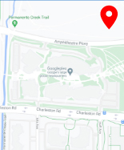
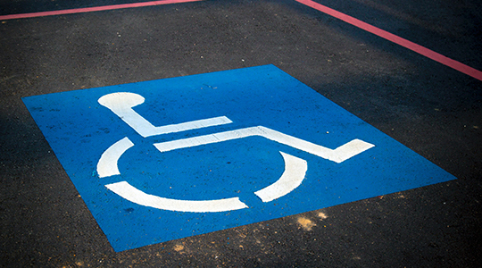
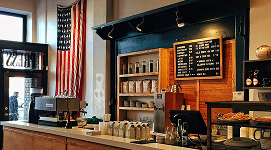
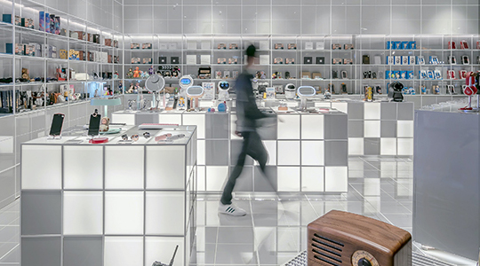

THE ENTRENCE IS FREE FOR ALL
There are guided tours of the museum that leave every hour. These tours are 70 NOK per person and include a handy printed guide of the museum. You will be shown around the museum and introduced to the drifferent exhibitions that we have. The guids love questions so don be shy to ask if you have something on your mind. If you would like to organise a guided tour for your group of 6 or more people, please contact us to arrange the tour.
HOURS
Monday: Closed
Tuesday: 10:00 – 16:00
Wednesday: 10:00 – 16:00
Thursday: 10:00 – 16:00
Friday: 10:00 – 19:00
Saturday: 9:00 – 16:00
Sunday: 9:00 – 13:00


Accessibility
The museum has wheelchair accessibility ramps. It also has audio guides and braille display signs for the visually impaired.

Food And Drinks
There is a café attached to the museum where you can get light lunches, soft drinks, coffee, snacks and more.

Shop
Our shop offers a range of memorabilia from the museum as well as great gifts and activity packs that allow you to continue to explore science even after you’ve left the museum.